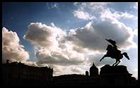

Ungersböck, Schulerstrasse
Ooh what a find - small, dingy and warm with several sofas and lots of
armchairs! Now this is
what I like in a cafe, especially when the coffee is as good as it seems to be everywhere in Vienna. Looking around I see dim table lamps, heavy velvet curtains and enough wood panelling to make a small forest. There are also loads of old ornaments - little cherubs, for example, which go with the music to give the place a slightly kitsch feel.

The staff are friendly, probably out of boredom, given how quiet it is.
When I got my book out they seemed very concerned that I might like to sit closer to one of the lamps, or have a table, or anything. Almost as soon as I had settled back into reading Bill Bryson describe turning up in European countries where he doesn't speak the language, customer number three came in. She wished me 'Gruss Gott', which she changed to 'hello' once the waitress told her that I wasn't ignoring her, but that I don't understand German. I'd let you know whether she's cute or not, but she's sitting at the bar with her back to me.
The melange is an odd drink - a cup of strong white coffee
with a blob of whipped cream on top. A bit poncy for my taste, but the coffee is excellent here, and so it should be for an outrageous fifty Austrian shillings.
(Now that I've been elsewhere back to Ungersböck, I realise that
fifty shillings is in fact outrageous and that whipped cream on the melange is poncy even for Vienna. Melange is normally just like an Italian capuccino - strong coffee with foamed milk.)
Kaffee Alt Wien, Bäckerstrasse
 Phew! For a while then I was worried that Vienna is like
Luxembourg -
no-one out after dark apart from the odd gaggle of little old ladies out walking their fur coats. Kaffee Alt Wien, however, is like a proper bar or pub, with young people and everything. There is quite a variety of people here, but only those who feel at home in this down to earth, studenty atmosphere, which is enhanced by the gig posters that cover the walls.
Phew! For a while then I was worried that Vienna is like
Luxembourg -
no-one out after dark apart from the odd gaggle of little old ladies out walking their fur coats. Kaffee Alt Wien, however, is like a proper bar or pub, with young people and everything. There is quite a variety of people here, but only those who feel at home in this down to earth, studenty atmosphere, which is enhanced by the gig posters that cover the walls.
(Back again, nine days later, I'm glad to be back in what is one of the
best 'pubs' in Vienna. Lively as usual, we have to share a table with some other people, which is okay. Shockingly, they only serve one kind of beer - so no hefe weizen for me, which is not okay. Just to make it a bit worse, the half-litre glass of pils has a handle. I don't really mind, because it's normal here, but I'm still not keen.)
Krah-Krah, Rabenstrasse
It is getting a bit late in the evening at this point, as it does when
the beer is good and there is no 'time at the bar' at 11 p.m. Krah-Krah, as well as having quite a good 'crow' thing, is blessed with hefe weizen (German wheat beer) on draft! I'm a big fan, especially when you get a half litre for less than two quid.
The downside of this late opening is that now it's now after 2 a.m.,
the chairs are on the tables, and I have to get up for work in the morning. Oh well.
(Continuing my return visit to the 'pubs', nine days later, I have come
to Krah-Krah from Kaffee Alt Wien because I know I'll get my hefe weizen here. I didn't notice last time, but they are playing rock music here this time. Combined with the large crowd - everything in Bermuda triangle is very busy - this makes for a lively atmosphere.)
{kind=link}
 Phew! For a while then I was worried that Vienna is like
Luxembourg -
no-one out after dark apart from the odd gaggle of little old ladies out walking their fur coats. Kaffee Alt Wien, however, is like a proper bar or pub, with young people and everything. There is quite a variety of people here, but only those who feel at home in this down to earth, studenty atmosphere, which is enhanced by the gig posters that cover the walls.
Phew! For a while then I was worried that Vienna is like
Luxembourg -
no-one out after dark apart from the odd gaggle of little old ladies out walking their fur coats. Kaffee Alt Wien, however, is like a proper bar or pub, with young people and everything. There is quite a variety of people here, but only those who feel at home in this down to earth, studenty atmosphere, which is enhanced by the gig posters that cover the walls.